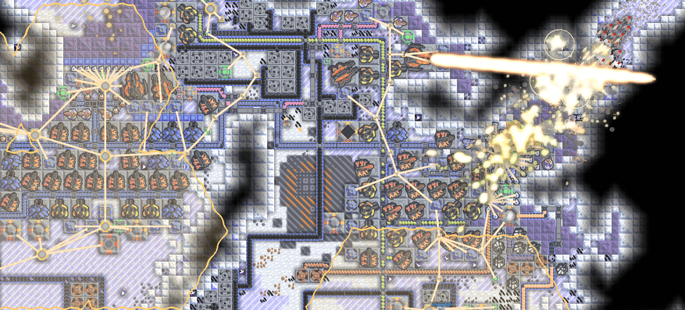
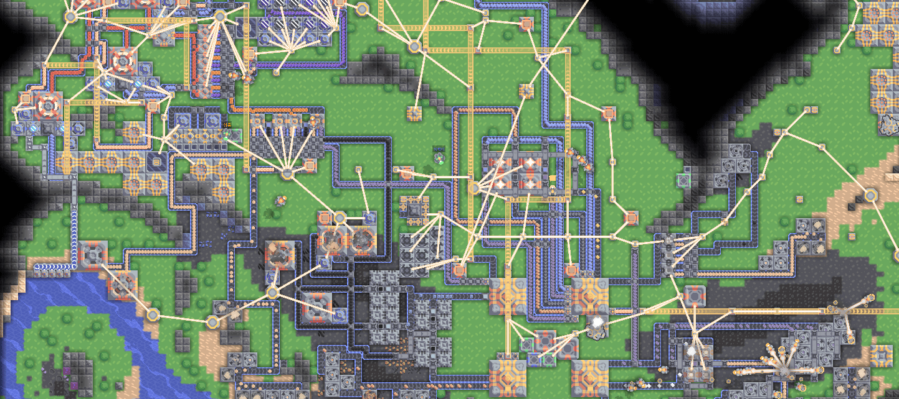
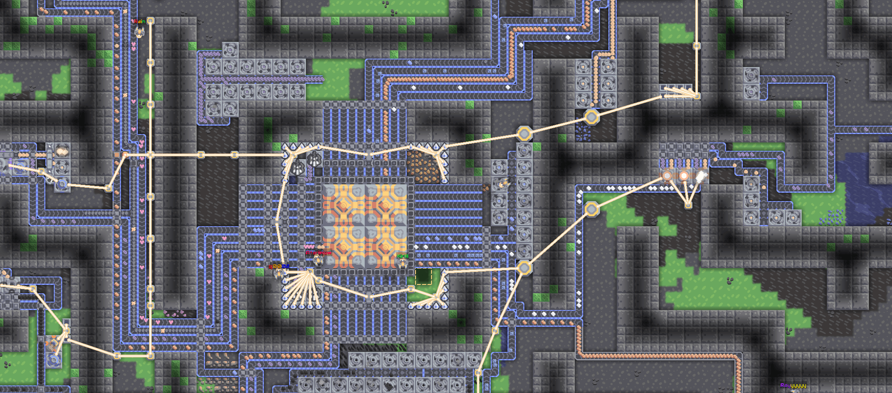

What the game is
Part tower defense, part automation game, part RTS. You build a working supply chain and defend a core that enemies are trying to destroy.
A factory-building tower-defense RTS: mine resources, route conveyors, power machines, build turrets and units, then survive waves of attackers with other players on the LAN.
Choose Mindustry when you want something busier than a board game: conveyor-belt planning, base defense, shared building, and frantic repairs when a wave breaks through.
Part tower defense, part automation game, part RTS. You build a working supply chain and defend a core that enemies are trying to destroy.
The arcade box hosts the dedicated server. Phones and laptops run the official Mindustry client, so rendering and controls stay on each player device.
Install the server-compatible desktop client from the local downloads below, then join the LAN Arcade server from Multiplayer.
Server-compatible Mindustry v157.4 desktop and server files are cached on GannanNet. These are local LAN downloads.
Use this on Windows, Linux, or macOS with Java 17 or newer, then join 192.168.1.106:6567.
Cached for offline repair or rebuilding of the LAN Arcade dedicated server image.
Download server JAROpen the local shelf for dependencies, manifest, and SHA256 checksums.
Open download shelfThese official Mindustry website screenshots are stored locally so the page still explains the game without internet.



The dedicated server is only meant to run when someone wants to play. Start it, join from clients, then stop it when the session is done.
Play -> Join Game.Add Server.192.168.1.106:6567.Ancient_Caldera survival.6567 over both TCP and UDP.MINDUSTRY_XMX=512m \ docker compose -f deploy/mindustry.compose.yml up -d
The first goal is not to build something pretty. The first goal is to keep the core alive while materials keep flowing. If a belt stops, your defenses starve.
Place drills on copper, lead, coal, titanium, or other ores and route output with conveyors. The core is your shared storage and loss condition.
Put turrets near enemy paths and feed them ammunition. Walls buy time; repair points and menders help later.
Some machines need power. Link generators, batteries, and nodes carefully so production does not collapse mid-wave.
Simple belts and drills are not enough forever. Graphite, silicon, and stronger materials unlock better blocks and units.
One player can patch defenses while another expands mining, another manages power, and another builds units.
This page is tied to a real smoke test, not just a placeholder card.
Dedicated server loaded Ancient_Caldera survival, opened 6567, and had no bad log markers.
Measured with MINDUSTRY_XMX=256m during the VM service smoke.
groundZero is a campaign sector name, not a valid built-in dedicated-server map name for the tested server release. The page now uses Ancient_Caldera.
Most join failures are version mismatch, service stopped, same-LAN discovery failure, or blocked UDP/TCP on port 6567.
Use direct IP with Add Server. LAN discovery is convenient but not guaranteed on every router or hotspot.
Check that the container is running, all players are on the same network, and clients are compatible with the server version.
Run one bigger service at a time on Pi-class hardware. Stop idle containers and avoid huge maps until a real LAN playtest passes.